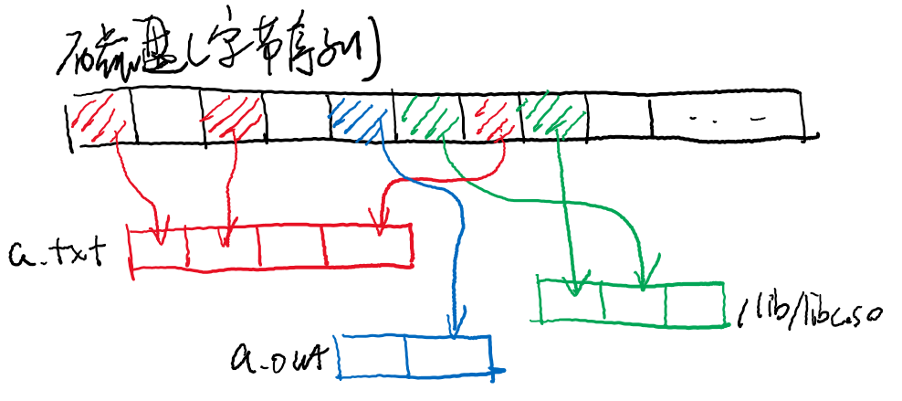

public: True class: center, middle # 文件系统概念 蒋炎岩 <jyy@nju.edu.cn> 南京大学计算机软件研究所 --- # 本讲概述 > 为什么会需要“文件系统”？文件系统是如何被引入到操作系统中的？现代计算机系统需要怎样的文件系统？ * 文件系统的引入 * 文件系统设计 --- class: center, middle # 文件系统的引入 --- # 复习：存储介质 各种存储1个bit的方式 * 磁：磁带、磁盘…… * 光：挖坑、相变材料…… * 电：NAND Flash, 3D XPoint, ... --- # 复习：I/O设备 .center[<img src="../static/wiki/os/2019/img/iodev-model.png" width="500px"/>] I/O设备：把底层硬件的细节抽象为(status, command, data)的接口 * 存储设备：把读/写请求转变为磁/光/电/机械装置上的信号 * 中断：在设备状态发生改变后通知CPU * DMA：实现memcpy的设备 --- # 复习：设备驱动程序 把I/O设备控制接口抽象为一组API * 设备最常用的功能是.red[交换数据]：read/write、.red[配置]：ioctl ```c ssize_t dev_write(void *buf, size_t length) { P(device_ready); for (size_t i = 0; i != length; i++) mmio_write(DEV_DATA_REG, ((uint8_t *)buf)[i]); P(device_ready); } void on_irq() { if (mmio_read(DEV_READY_REG) == READY) V(device_ready); } ``` --- # 进一步的抽象：文件系统 .center[<img src="../static/wiki/os/2019/img/under-fs.png" width="700px"/>] --- class: center, middle # 文件系统概念 --- # 需求分析 让应用程序直接访问设备 (1950s) 在今天不是一个好主意： * 系统中有非常多的程序，每个程序本身的存储就是问题 * 每个程序还需要考虑各种访问权限、并发控制…… * 程序出bug了，不小心弄坏了整块磁盘 ---- 操作系统中的进程： - `execve()` “执行”的程序从哪来？ - 如何访问操作系统中的设备？ - 每个进程都希望打印日志，但只有一个磁盘，如何协调？ --- # 存储设备.red[虚拟化] 磁盘 (I/O设备)：一个可以读/写的定长字节序列 - 虚拟磁盘(文件)：一个可以读/写/的动态字节序列 - 可以理解成`std::vector<uint8_t>` - 类比 - 进程 (虚拟CPU)：分时共享一个CPU - 虚拟存储：多个虚拟地址空间 --- # 存储设备虚拟化 (cont'd) 与虚拟存储类似，.red[给每个虚拟磁盘一个名字] ```c++ std::map<std::string,std::vector<uint8_t>> fs; ``` .center[] --- # 存储设备虚拟化 (cont'd) 传统理解：文件系统是.red[保存在持久存储上的数据结构] * 数据结构在磁盘上的存储格式规范 * 允许对数据结构进行的操作 ---- 文件系统实现 = 数据结构的查询/修改操作 * 文件系统未必需要实现成操作系统的一部分 * “文件管理”进程：能够访问存储设备 * 其他进程：与文件管理进程通信发送文件操作请求 * FUSE "file system in user space"; [libfuse](https://github.com/libfuse/libfuse)，需要操作系统内核支持 --- # 层次结构的文件系统 文件：可读写的数据对象；虚拟磁盘 * 系统中可能有数百万的文件 * key-value的方式不便于人管理 目录：文件/目录的集合 * 目录体现了.red[局部性]：相关的数据存放在相近的目录 ---- 有趣的事实：目录结构未必需要用树实现 * 文件系统只是一个.red[数据结构] * 依然可以用key-value实现 --- # Linux中的目录结构 树形结构有助于帮我们分组 * 人工训练的一个“决策树” * 每个目录有`.` (当前目录)和`..` (上级目录)两个特殊的目录 ``` $ tree / d -L 2 / ├── bin ├── boot ├── dev │ ├── block │ ├── fd -> /proc/self/fd │ ├── pts │ └── shm -> /run/shm ├── etc │ ├── apt ... ``` --- # [Filesystem Hierarchy Standard](http://refspecs.linuxfoundation.org/FHS_3.0/fhs/index.html) > This standard (FHS) enables: > > * Software to predict the location of installed files and directories, and > * Users to predict the location of installed files and directories > > We do this by: > > * Specifying guiding principles for each area of the filesystem, > * Specifying the minimum files and directories required, > * Enumerating exceptions to the principles, and > * Enumerating specific cases where there has been historical conflict. --- # 目录结构设计：达成共识 * /boot - 系统启动数据 * /bin - 应用程序 (bash, ps, grep, ...) * /dev - 设备文件 * /sbin - 系统程序 (mkfs, fdisk, ifconfig, dhclient, ...) * /etc - 配置文件 (= "etcetera"，此处有黑人问号) * /home - 用户目录 * /lib - 库文件 (libc.so, libpthread.so, ...) * /media - 可移动设备 (cdrom, USB flash ,...) * /usr - 用户程序 (/usr/bin/, /usr/lib/, /usr/local/) * /var - 可变文件 (logs, snapshots, ...) * /tmp - 临时文件 --- # 文件系统基本操作 每个进程有一个“当前工作目录” (current working directory)nc * `man 2 chdir`; `echo $PWD` (这就是为什么没有`/bin/cd`) ---- 目录操作： * 改变进程工作目录、路径解析 * 读取目录 (getdents, [M1](OS2019_M1), "These are not the interfaces you are interested in.") * 目录操作 (link, unlink, rename, ...) 文件操作： * 打开(返回文件描述符)、关闭 * 文件描述符操作：read, write, lseek, ioctl, mmap, ... --- class: center, middle # Everything is a File：设计 --- # 扩展“文件”的定义 最早有“文件系统”时，“文件”就指一个可以读写的虚拟磁盘 - 文件系统里也只有目录和(虚拟磁盘)文件 ---- 很快，大家发现需要提供API来访问操作系统中的数据 * `GetProcessSnapshot()` * `GetDeviceList()` * `CreatePipe()` ---- “文件”的意义被扩展了：.red[操作系统中的一个可读/写/控制的对象] * 文件描述符：指向操作系统对象的handle (这个定义就自然了) --- # 扩展“文件”的定义 (cont'd) 管理操作系统对象的本质：.red[传递数据的需求] - 持久数据 (persistent data)：源代码、二进制数据、用户数据、…… - 操作系统状态：进程、系统信息、设备、…… ------ 典型应用场景 - 写代码的例子：在编辑器中输入了程序代码 → 程序代码输入编译器、输出可执行文件 → execve能运行这个可执行文件 - 编辑数据的例子：编辑本地电子表格中的数据 → 数据保存到USB闪存 → 在另一台电脑上打开 - 总线：总线是树状结构 → 设备动态变化 → 目录结构变化 - 进程：进程是树状结构 → .green[为什么`/proc`不是进程树？] --- # Everything is a File 文件系统是管理操作系统内部对象的中间层 - 文件描述符 = 指向对象的指针 - read/write/ioctl系统调用 = 对象访问 .center[<img src="../static/wiki/os/2019/img/fs-motivation.png" width="700px"/>] --- # “虚拟”文件系统 文件系统需要实现的需求 * 根据路径.red[解析]出操作系统中的对象 (磁盘文件、进程、操作系统配置、……) * open() → 解析路径、找到对象 → 对象自带read/write/...操作 → 创建文件描述符 ---- 文件系统更像一个“路由器” * Linux VFS: Virtual File System (Virtual Filesystem Switch) ```c struct inode_operations { int (*create) (struct inode *, struct dentry *, int); struct dentry * (*lookup) (struct inode *, struct dentry *); int (*link) (struct dentry *, struct inode *, struct dentry *); ... }; ``` --- # 虚拟文件系统：实现 把read/write翻译成对操作系统.red[对象]的读写 * 进程/线程：([thread-os.c](/static/wiki/os/2019/demos/thread-os.c)) ```c struct task { const char *name; _Context context; char stack[4096]; } tasks[] = { ... }; ``` * 文件/目录 (虚拟磁盘) * 设备：支持一系列.blue[操作]的数据结构(read, write, ioctl, ...) * 其他数据：系统启动时间、系统统计信息、CPU信息、可用内存信息……